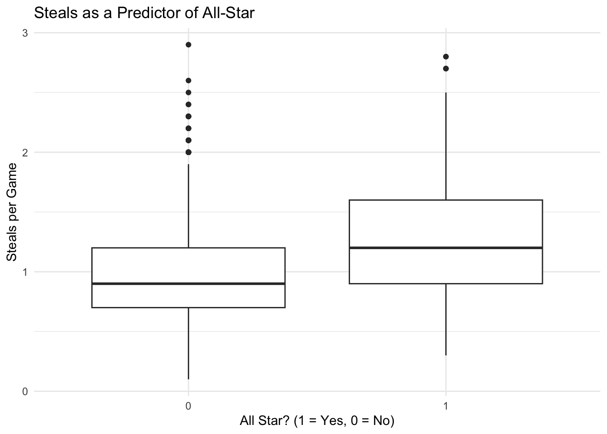
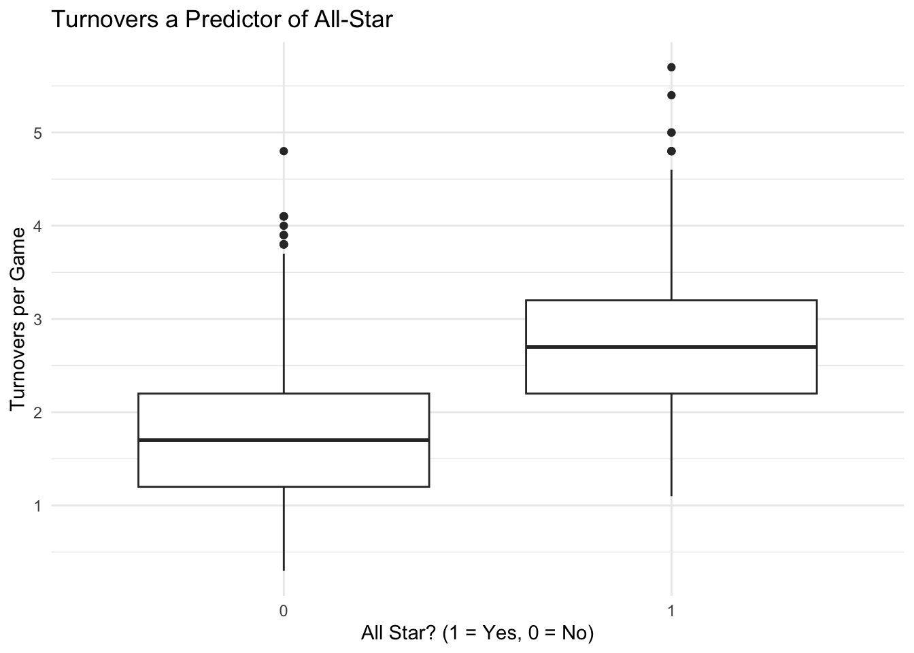

library(tidyverse)
library(dplyr)
player_averages <-
read_csv("/Users/tannerbessette/Desktop/Python_Textbook/NBA_Project/Player_Per_Game.csv")
all_stars <- read_csv("/Users/tannerbessette/Desktop/Python_Textbook/NBA_Project/All_Star_Selections.csv")
player_totals <-
read_csv("/Users/tannerbessette/Desktop/Python_Textbook/NBA_Project/Player_Totals.csv")Tasks for November 14th
Wrangling tasks for Thursday, November 14th:
joining the player totals .csv and with the all-star selections.csv files and making a variable for whether or not each player was selected to be on the all-star team for a particular season.
probably filtering down to only keep more recent years and to only keep players who started at least an xxxx number of games (so we’re only looking at starters in each season).
Load libraries and import data
Join datasets and create an all-star variable with two levels
# create an all-star variable with 1 = made all-star and 0 = didn't make it:
all_stars <- all_stars |>
mutate(all_star = 1)
# Join player averages data with the all_stars data:
joined_all_star_data <- left_join(player_averages, all_stars,
by = c("season", "player"))
# remove variables that we definitely won't need:
joined_all_star_data <- joined_all_star_data |>
dplyr::select(-c("birth_year", "lg.x", "lg.y", "team"))
# fix the all-star variable to be 0s and 1s not 1s and NAs
joined_all_star_data <- joined_all_star_data |>
mutate(all_star = case_when(
is.na(all_star) ~ 0,
all_star == 1 ~ 1))Filter down to keep recent years and NBA starters
I think a fair bar is a player must have started at least half of the games in an NBA season - so 42 games. Let’s also only keep 21st century, since the game has evolved so much since before 2000. Also exclude the year 2025, because the season is active, and there has not been an all-star game.
# specify the seasons:
joined_all_star_data <- joined_all_star_data |>
filter(season > 1999) |>
filter(season != 2025)
# specify the number of starts each player must have (at least half of the season):
joined_all_star_data <- joined_all_star_data |>
filter(gs > 41)Tasks for Thursday, November 21st:
# export updated dataset so we can import again with Python:
write_csv(joined_all_star_data, "/Users/tannerbessette/Desktop/Python_Textbook/NBA_Project/joined_all_star_data.csv")Visualize NBA data in R
library(GGally)Registered S3 method overwritten by 'GGally':
method from
+.gg ggplot2variable.names(joined_all_star_data) [1] "seas_id" "season" "player_id" "player"
[5] "pos" "age" "experience" "tm"
[9] "g" "gs" "mp_per_game" "fg_per_game"
[13] "fga_per_game" "fg_percent" "x3p_per_game" "x3pa_per_game"
[17] "x3p_percent" "x2p_per_game" "x2pa_per_game" "x2p_percent"
[21] "e_fg_percent" "ft_per_game" "fta_per_game" "ft_percent"
[25] "orb_per_game" "drb_per_game" "trb_per_game" "ast_per_game"
[29] "stl_per_game" "blk_per_game" "tov_per_game" "pf_per_game"
[33] "pts_per_game" "replaced" "all_star" Box plots to see how points, rebounds, assists correlate to all-star
library(ggplot2)
# Points:
ggplot(joined_all_star_data, aes(x = as.factor(all_star),
y = pts_per_game)) +
geom_boxplot() +
labs(x = "All Star? (1 = Yes, 0 = No)",
y = "Points Per Game",
title = "Points Per Game as a Predictor of All-Star") +
theme_minimal()# Rebounds:
ggplot(joined_all_star_data, aes(x = as.factor(all_star),
y = trb_per_game)) +
geom_boxplot() +
labs(x = "All Star? (1 = Yes, 0 = No)",
y = "Rebounds Per Game",
title = "Rebounds Per Game as a Predictor of All-Star") +
theme_minimal()
# Assists:
ggplot(joined_all_star_data, aes(x = as.factor(all_star),
y = ast_per_game)) +
geom_boxplot() +
labs(x = "All Star? (1 = Yes, 0 = No)",
y = "Assists Per Game",
title = "Assists Per Game as a Predictor of All-Star") +
theme_minimal()All three seem to have a difference in means between making and missing all-star game as we would expect, but of the three, points seems to be the most significant predictor, then assists, then rebounds seem to be a bit less significant.
Let’s try the same plots for minutes played, experience, 3-pointers per game, blocks and steals per game.
# Minutes Played:
ggplot(joined_all_star_data, aes(x = as.factor(all_star),
y = mp_per_game)) +
geom_boxplot() +
labs(x = "All Star? (1 = Yes, 0 = No)",
y = "Minutes Played Per Game",
title = "Minutes Played Per Game as a Predictor of All-Star") +
theme_minimal() 
# Experience:
ggplot(joined_all_star_data, aes(x = as.factor(all_star),
y = experience)) +
geom_boxplot() +
labs(x = "All Star? (1 = Yes, 0 = No)",
y = "Experience in NBA",
title = "Experience as a Predictor of All-Star") +
theme_minimal()
# 3 pointers made per game:
ggplot(joined_all_star_data, aes(x = as.factor(all_star),
y = x3p_per_game)) +
geom_boxplot() +
labs(x = "All Star? (1 = Yes, 0 = No)",
y = "3 Pointers Made per Game",
title = "3 Pointers as a Predictor of All-Star") +
theme_minimal()
# Blocks per game:
ggplot(joined_all_star_data, aes(x = as.factor(all_star),
y = blk_per_game)) +
geom_boxplot() +
labs(x = "All Star? (1 = Yes, 0 = No)",
y = "Blocks per Game",
title = "Blocks as a Predictor of All-Star") +
theme_minimal()
# Steals per game:
ggplot(joined_all_star_data, aes(x = as.factor(all_star),
y = stl_per_game)) +
geom_boxplot() +
labs(x = "All Star? (1 = Yes, 0 = No)",
y = "Steals per Game",
title = "Steals as a Predictor of All-Star") +
theme_minimal()
From minutes played graph: An interesting takeaway from this plot is out of players playing less than 26/27 minutes per game, not a single one made the all-star game.
Experience does not appear to be a significant predictor of whether somebody makes the all-star game.
3 pointers does not seem to be very significant either, but one takeaway is that if you are making a very high amount of threes (more than 4 per game), you are almost guaranteed to be an all-star that season.
Blocks appears to have a slight positive correlation to whether or not a player was an all-star, while steals appears to have the same correlation but a little more obvious. (Steals appear more significant than blocks).
The last few variables I want to look at are attempted field goals per game - because if you are attempting a lot of shots, you are likely one of your team’s trusted scorers, and turnovers per game - my thought process is that the better players have the ball more, and if you have the ball a lot of the time you are more likely to turn the ball over.
# Field Goals Made per game:
ggplot(joined_all_star_data, aes(x = as.factor(all_star),
y = fga_per_game)) +
geom_boxplot() +
labs(x = "All Star? (1 = Yes, 0 = No)",
y = "Field Goals Attempts per Game",
title = "Field Goal Attempts a Predictor of All-Star") +
theme_minimal()
# Turnovers per game:
ggplot(joined_all_star_data, aes(x = as.factor(all_star),
y = tov_per_game)) +
geom_boxplot() +
labs(x = "All Star? (1 = Yes, 0 = No)",
y = "Turnovers per Game",
title = "Turnovers a Predictor of All-Star") +
theme_minimal()
Field goal attempts appears to be one of the most significant predictors I have looked at yet. (Field goals made also appears to be simiarly significicant, but would probably have to include only one field goal statistic when running the knn model).
Turnovers also appears to be significant, just as I had hypothesized, probably in a different way than the average fan would expect. Typically, we associate more turnovers with a player performing poorly, but clearly this is not something the voters weigh heavily when casting their all-star ballots each season.
KNN Modeling in R to Predict All-Star
Split up data into train and test (in R):
# Calculate 80% of 3565 to make our train data:
3565 * 0.8[1] 2852# Set a seed for reproducibility
set.seed(123)
# Create the train and test datasets
train_sample <- joined_all_star_data |>
slice_sample(n = 2852)
test_sample <- anti_join(joined_all_star_data, train_sample)Joining with `by = join_by(seas_id, season, player_id, player, pos, age,
experience, tm, g, gs, mp_per_game, fg_per_game, fga_per_game, fg_percent,
x3p_per_game, x3pa_per_game, x3p_percent, x2p_per_game, x2pa_per_game,
x2p_percent, e_fg_percent, ft_per_game, fta_per_game, ft_percent, orb_per_game,
drb_per_game, trb_per_game, ast_per_game, stl_per_game, blk_per_game,
tov_per_game, pf_per_game, pts_per_game, replaced, all_star)`Create a data frame that only has the predictors we will use, and put the response (all-star) into a vector:
library(class)
# Create dataframes:
train_small <- train_sample |> dplyr::select(pts_per_game, trb_per_game,
ast_per_game, stl_per_game, fga_per_game, tov_per_game)
test_small <- test_sample |> dplyr::select(pts_per_game, trb_per_game,
ast_per_game, stl_per_game, fga_per_game, tov_per_game)
# Create vectors:
train_cat <- train_sample$all_star
test_cat <- test_sample$all_starFit the KNN model (with \(\sqrt(2852)\) nearest neighbors):
# Find a good number of nearest neighbors (sqrt of train size):
sqrt(2852) # use 53 nearest neighbors[1] 53.40412# Fit the knn model:
knn_mod <- knn(train = train_small, test = test_small,
cl = train_cat, k = 9)
knn_mod [1] 0 0 0 0 0 0 0 0 0 0 0 0 0 0 0 1 0 0 1 1 0 0 0 0 1 0 0 1 0 0 1 0 1 1 1 0 0
[38] 0 0 0 1 0 0 1 0 0 0 0 0 0 0 0 0 0 0 1 1 0 1 0 0 0 1 0 1 1 0 0 0 1 0 1 1 0
[75] 0 0 0 0 0 0 1 1 0 0 0 0 0 0 0 1 0 0 0 1 0 0 0 0 0 0 0 1 0 0 1 0 1 0 0 0 1
[112] 0 0 0 0 0 0 1 0 1 1 0 0 1 0 0 0 1 0 0 0 1 0 0 0 1 0 1 0 0 0 0 0 1 0 0 0 0
[149] 0 1 1 1 0 0 0 1 0 0 0 0 0 1 0 0 0 1 1 0 0 0 0 0 0 1 0 0 0 0 0 1 0 0 0 0 0
[186] 0 0 1 0 0 0 0 1 0 0 1 0 0 1 0 0 0 0 0 0 0 1 0 0 0 0 0 1 0 1 1 0 1 0 0 0 0
[223] 0 0 0 0 0 1 1 0 0 0 0 0 0 0 0 0 0 0 0 0 0 0 0 0 0 0 0 0 0 0 0 0 0 0 0 0 0
[260] 0 0 0 0 0 0 0 0 0 0 0 0 1 0 0 0 1 0 0 0 0 0 1 0 0 0 0 0 0 0 0 0 0 0 0 0 0
[297] 0 0 0 0 0 0 0 0 1 0 0 0 0 0 0 0 0 0 0 0 0 0 0 0 0 0 0 0 0 0 0 0 0 0 0 0 0
[334] 1 0 0 0 0 0 0 0 0 0 0 0 0 0 0 0 0 0 0 0 0 0 0 0 1 0 0 0 0 0 0 0 0 0 0 0 0
[371] 0 0 0 0 0 1 0 0 1 0 0 0 1 0 1 0 0 0 0 0 0 0 0 0 0 0 1 0 0 0 0 0 0 0 0 0 0
[408] 0 0 0 0 0 0 0 0 0 0 0 0 0 0 0 0 0 0 0 0 0 0 0 0 0 0 0 0 0 0 0 0 0 0 0 0 0
[445] 0 0 0 0 0 0 0 0 0 0 0 0 0 0 0 0 1 1 0 1 0 0 0 0 0 0 0 0 0 0 0 0 0 0 0 0 0
[482] 1 0 0 1 1 0 0 0 0 1 0 0 1 0 0 0 1 1 0 0 0 0 0 0 0 0 1 0 0 0 0 0 0 0 1 1 0
[519] 0 0 0 0 1 0 1 1 0 0 0 0 0 0 0 0 0 1 0 0 0 0 0 0 1 0 1 0 0 0 0 0 0 0 0 0 0
[556] 0 0 0 0 0 0 0 1 0 0 1 0 0 0 1 0 0 0 0 0 0 0 0 0 0 0 0 0 0 0 0 0 0 0 0 0 0
[593] 0 0 0 0 0 0 1 0 0 0 0 0 1 0 0 0 0 0 1 0 0 0 0 0 0 1 0 0 0 0 0 0 0 0 0 0 0
[630] 0 0 0 0 0 0 0 0 1 0 0 0 0 0 0 0 0 0 0 0 1 0 0 0 0 0 0 0 0 0 0 0 0 0 0 0 0
[667] 0 0 0 0 1 0 0 0 0 0 0 0 0 0 0 0 0 0 1 0 0 0 0 1 0 0 1 0 0 0 0 0 0 0 0 0 1
[704] 0 0 0 0 0 0 0 0 0 0
Levels: 0 1Evaluate our KNN Model:
# Display the confusion matrix:
table <- table(knn_mod, test_cat)
# Obtain the classification rate from confusion matrix:
sum(diag(table)) / sum(table)[1] 0.8892006The rows of the table give us our model’s predicted all_star choice (made it or didn’t make it), and the column’s give the actual result.
Our classification rate of 88.92% tells us that our knn model predicted whether or not players made the all-star game with an accuracy of 88.92%!
KNN Modeling in Python:
import pandas as pd
import numpy as np
from palmerpenguins import load_penguins
import math
# read in the data we wrangled previously
joined_all_star_data = pd.read_csv("/Users/tannerbessette/Desktop/Python_Textbook/NBA_Project/joined_all_star_data.csv")
# set the seed
np.random.seed(42)Create train and test data:
# .sample in Python appears to be the same as slice_sample in R
train_sample = joined_all_star_data.sample(n = 2852)
# below is what we are using instead of an anti-join
# basically does a left join but creates a merge variable that
# indicates whether a row was in both original datasets, the left,
# or the right. Only keep in left, and remove the variable afterwards
columns_to_join_on = joined_all_star_data.columns.tolist()
test_sample = joined_all_star_data.merge(train_sample, on=columns_to_join_on, how='left', indicator=True)
test_sample = test_sample[test_sample['_merge'] == 'left_only'].drop(columns=['_merge'])Create a data frame that only has the predictors we will use, and put the response (all-star) into a vector:
# to specify the columns to use for knn model, create a list, then
# select just those columns from train and test datasets
columns_to_keep = ['pts_per_game', 'trb_per_game', 'ast_per_game',
'stl_per_game', 'fga_per_game', 'tov_per_game']
train_small = train_sample[columns_to_keep]
test_small = test_sample[columns_to_keep]Fit the KNN model (with \(\sqrt(2852)\) nearest neighbors):
# Find a good number of nearest neighbors (sqrt of train size):
math.sqrt(2852) # use 53 nearest neighbors53.40411969127476Fit the knn model:
knn_mod <- knn(train = train_small, test = test_small, cl = train_cat, k = 9) knn_mod